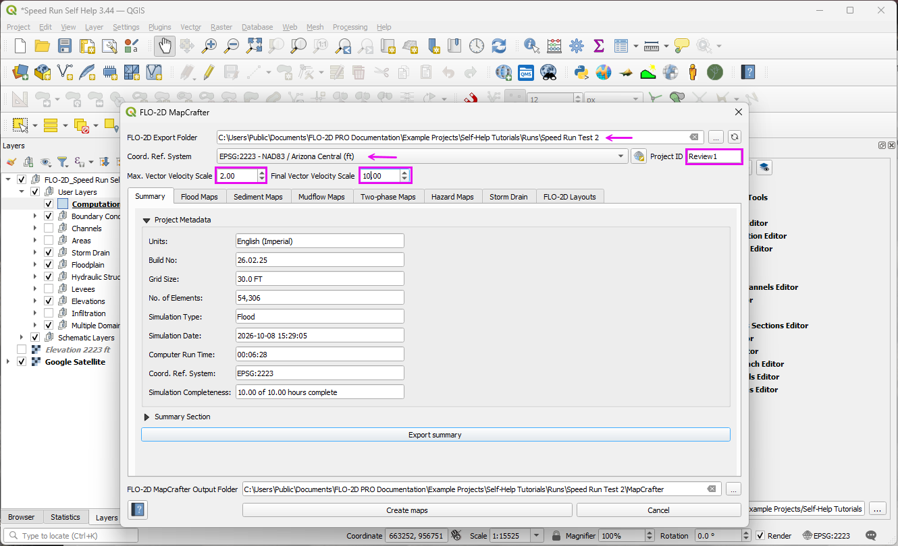

Project Review and Mapping
Load Results and Maps
Note
Placeholder video. Final version not ready. This is currently under construction.
Load the maps and results to prepare for the project review.
Step 1: Run FLO-2D MapCrafter
Open
SUMMARY.OUTin the completed simulation run folder.Confirm the simulation completed and review the engine build, volume conservation, rainfall, infiltration, grid size, number of grid elements, and runtime.
The following simplified example shows some of the information in this ASCII file.
Example SUMMARY.OUT Results
SIMULATION TIME AVERAGE TIMESTEP VOLUME CONSERVATION
(HOURS) (SECONDS) (ACRE-FEET) PERCENT
0.0003 1.000 -0.000000 0.000000
0.1002 1.124 -0.000000 0.000000
0.2002 1.319 0.000000 0.000000
... ... ... ...
9.9002 1.242 0.000000 0.000000
10.0000 1.252 0.000000 0.000000
==========================================================
MASS BALANCE (ACRE-FEET)
==========================================================
INFLOW
Rainfall Volume 328.365
Surface Water Inflow 272.449
Total Inflow 600.814
OUTFLOW AND STORAGE
Infiltration and Interception 129.608
Floodplain Storage 119.596
Channel Storage 8.459
Channel Outflow 340.932
Total Outflow and Storage 600.816
==========================================================
SIMULATION RESULTS
==========================================================
Maximum Inundated Area 896.141 acres
Maximum Area (Depth > 0.5 ft) 184.537 acres
==========================================================
SIMULATION SUMMARY
==========================================================
GRID ELEMENT SIZE: 30.0 FT
TOTAL NUMBER OF GRID ELEMENTS: 54306
GRID SYSTEM AREA: 1122.02 ACRES 1.7526 SQ. MI
FLOODPLAIN AND CHANNEL LOOP COMPUTATIONS: 2633059698
COMPUTER RUN TIME: 0.107910 HRS
OVERLAND LOOP RUN TIME: 0.040020 HRS
OUTPUT FILE WAS TERMINATED ON: 10/08/2026 AT: 15:29:05
Return to QGIS and open FLO-2D MapCrafter.
Select the completed model run folder and enter a project ID for the results maps.
Verify the coordinate reference system. FLO-2D output files do not contain coordinate system information, so MapCrafter uses the QGIS project coordinate system.
Review the MapCrafter simulation summary and completeness information.

Open the Flood Maps options. Select the maps needed for the review, including ground elevation, modified ground elevation, basic flood results, and channel depths as appropriate.
Click Create Maps. The generated maps are added to the QGIS Layers panel under the project ID.
Move the MapCrafter group to a convenient position in the Layers panel. Toggle the maps on and off to inspect ground elevations, maximum flow depths, and channel results.
Note
The modified ground elevation map reflects elevation adjustments made by the FLO-2D engine during the simulation, such as adjustments at outflow elements, channel banks, or storm drain rims.
Step 2: Set the Results Folder
In the FLO-2D Plugin panel, locate the results folder path.
Click the … browse button and select the completed simulation run folder.
Confirm that the folder points to the same run used to create the MapCrafter maps.
The Results Tool can now access time-dependent output for grid elements and other modeled features. Detailed results plots are covered in the next section.
Step 3: Import the Results Mesh
Open the QGIS Data Source Manager and select Mesh.
Browse to the completed run folder and select
DEPTH.OUTas the mesh data source.Click Add. When the available mesh layers appear, select the 2D mesh and click Add Layers. The 1D mesh is not needed for this exercise.
Close the Data Source Manager and locate the new mesh layer in the QGIS Layers panel.
The mesh initially displays bed elevation. Open the Layer Styling panel to select other results, such as depth, velocity, velocity vectors, or water surface elevation.
Select a time-dependent result. At simulation time zero, the displayed results may be empty; select maximum results to confirm that data are available.
Open the QGIS Temporal Controller, activate temporal navigation, and set the animation range to the full available simulation period.
Advance through the time steps to review how rainfall runoff develops and moves through the model domain.
Note
Mesh styling and detailed interpretation of time-dependent results are covered in later sections of the tutorial.
Review a Project Run
Note
Placeholder video. Final version not ready.
Use the FLO-2D results tools to examine hydraulic conditions at selected locations and evaluate model performance.
Step 1: Use the Results Tool
Open the FLO-2D Results Tool.
Select a grid element to review the simulated hydraulic results.
Plot available time-dependent results, including flow depth, water surface elevation, and velocity.
Examine hydrographs at selected locations to identify peak values and their timing.
Review channel, hydraulic structure, and cross-section results where applicable.
Compare results at different locations to understand how floodwater moves through the model domain.
Step 2: Profile Tool
Open the Profile Tool and select the appropriate profile or channel feature.
Generate a longitudinal profile to examine ground elevations and simulated water surface elevations.
Review changes in water surface elevation along the selected profile.
Identify potential flow restrictions, backwater conditions, and abrupt changes in hydraulic grade.
Examine channel profiles and hydraulic structure locations where applicable.
Review Scenarios
Note
Placeholder video. Final version not ready.
Compare model scenarios to evaluate how changes in terrain, hydraulic structures, or other model parameters affect flooding.
Step 1: Compare Model Results
Load the results from the scenarios being evaluated.
Confirm that the scenarios use compatible coordinate systems, grid geometry, and hydrologic conditions.
Display the maximum depth, water surface elevation, and velocity maps for each scenario.
Compare flood extents and identify areas where hydraulic conditions have changed.
Evaluate changes in peak discharge, water surface elevation, and hydrograph timing at selected locations.
Document significant differences between scenarios and identify locations requiring additional review.